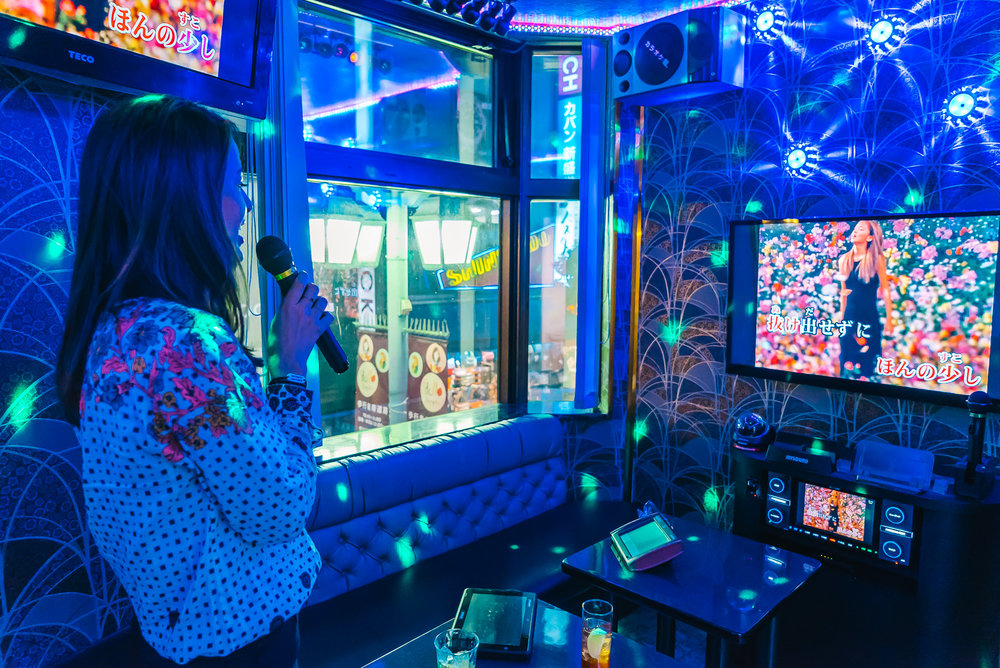
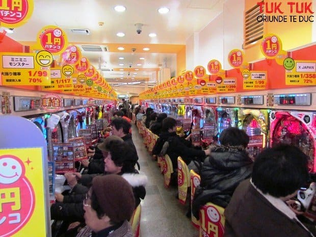
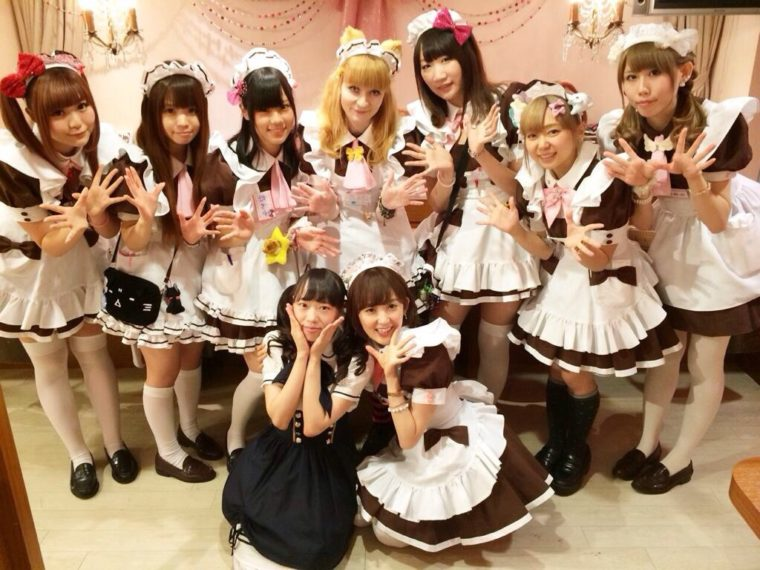

≧◠‿◠≦✌ Distracția in Japonia
E foarte greu sa compari poporul japonez cu oricare alt popor. Japonezii traiesc dupa cu totul alte concepte de viata, munca si distractie, decat orice alta natie, indiferent de continent.
❀ Karaoke
În anii 1970, unele baruri din Japonia au început să instaleze sisteme karaoke (cu casete) pentru distracția clienților. Devenind foarte îndrăgite, aceste sisteme s-au răspândit în scurt timp, fiind de nelipsit în hotelurile japoneze. Ulterior, au apărut și așa-numitele karaoke box, unde clienții pot cânta mai retras (izolați fonic de ceilalți clienți) citind versurile melodiilor pe un ecran TV. Melodiile sunt în marea lor majoritate melodii pop/rock.
❀ Pachinko

Orasele japoneze sunt pline de localuri Pachinko. Acestea sunt niste sali de jocuri electronice, care-si semnaleaza prezenta prin neoane si lumini.
Pachinko-urile sunt, de fapt, un tip de flippere pe verticala, combinate cu celebrele slot-machines. Jucatorul cumpara bile mici de otel (4 yeni una, dar de regula se cumpara cu miile de yeni), apoi controleaza viteza cu care acestea sunt aruncate de resorturile masinii si… cam atat. Jocul e simplu: majoritatea bilelor pur si simplu cad in partea de jos si dispar (nu exista acele flippere clasice care se pot manipula pentru a trimite inapoi bilele). Unele dintre ele (norocoasele) gasesc drum in niste gauri speciale si, odata intrate acolo, declanseaza un joc de tip slot-machines in care, clasic, castigi daca nimeresti “trei de-un fel”. Lucru care se intampla destul de rar.
❀ Maid Cafe
Maid Cafe este un curent nou apărut în Japonia şi semnifică o cafenea sau un local în care chelneriţele sunt îmbrăcate în costume de menajere. Pe lângă faptul că această costumaţie este ceva cu totul nou pentru un local, fiecare chelneriţă are unul sau mai multe servicii proprii pe care le oferă clienţilor la cererea acestora (de la deserturi personalizate până la fotografierea împreună cu chelneriţa preferată şi primirea unei dedicaţii din partea acesteia).
